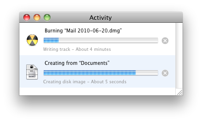

DropDMG can perform multiple operations at once, simultaneously creating disk images, burning them, verifying them, etc. This window shows the operations that are currently in progress and what states they are in. You can cancel an operation by clicking its × button.
DropDMG remembers between launches whether the window is open.
A shortcut for opening the Activity window is to click the progress spinner at the bottom of the DropDMG window.
